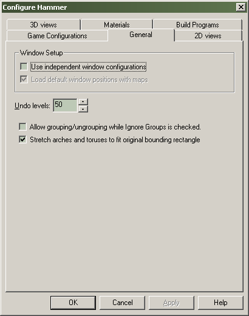
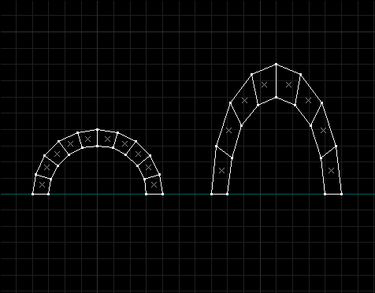

Options: General
The General configuration tab contains options which effect some of the basic editing operations of Hammer.

Window Setup
Use independent window configurations
Hammer's Independent Window Configuration is simple to use and extremely handy. It lets you customize your windows setup virtually any way you'd like. To add new windows, select New Window from the Window menu. Windows can be resized any way you like. You can use the Load Window State and Save Window State buttons on the Map View toolbar to save and restore your setups.
Load default window positions with maps
When using the using independent window configurations, this option will automatically use the saved window positions when you open a map. If this option is unchecked, only a single default XY 2D view window will appear when you open of create a new file. If this is not checked, you can still load the window setup manually using the Load Window State button on the Map View toolbar.
Undo Levels
Sets the number of Undo and Redo levels that Hammer will keep track of while you work. If you are receiving low memory warnings, it may be a good idea to set the number of undo levels to something lower. You can also use the Disable Undo/Redo command to save memory. It is recommended that you save your file before you do this, in case you make a mistake.
Allow grouping/ungrouping while Ignore Groups is checked.
With this option checked, you can group or ungroup objects while the Toggle Groups Ignore is enabled. You will not see the results of any grouping operation until you uncheck Toggle Group Ignore.
Stretch arches to fit original bounding rectangle
When creating arches and toruses using the Block Tool, this option stretches them to fit the size of the bounding rectangle. With this option deselected, the size of the object will be dependent on a combination of the size of the bounding box and the parameters in the Arch or Torus dialog box.

© 2004 Valve Corporation. All rights reserved. Valve, the Valve logo, Half-Life, the Half-Life logo, the Lambda logo, Steam, the Steam logo, Team Fortress, the Team Fortress logo, Opposing Force, Day of Defeat, the Day of Defeat logo, Counter-Strike, the Counter-Strike logo, Source, the Source logo, Hammer and Counter-Strike: Condition Zero are trademarks and/or registered trademarks of Valve Corporation. Microsoft and Visual Studio are trademarks and/or registered trademarks of Microsoft Corporation. All other trademarks are property of their respective owners.